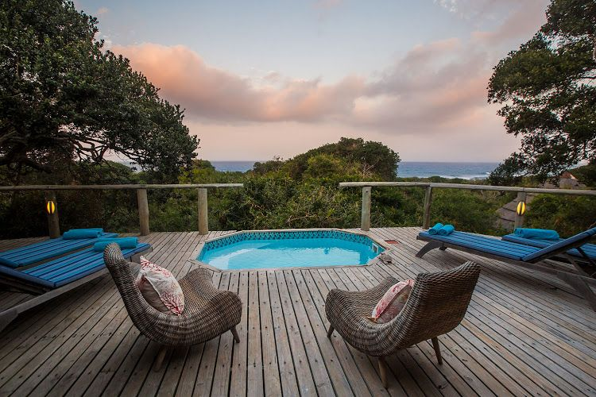
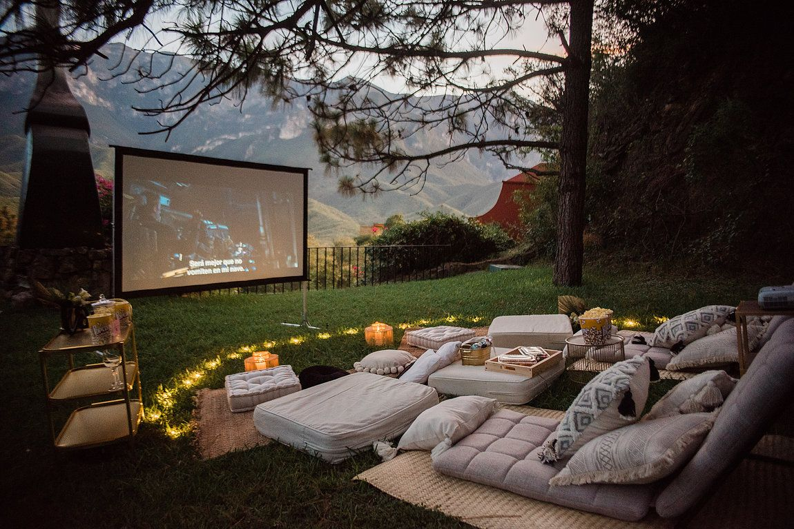

Destinations

Mountain Trails
Embark on an adventure through breathtaking mountain trails. From the majestic Alps to the stunning Himalayas, these walks will reward you with awe-inspiring views and a sense of accomplishment.

Coastal Escapes
Enjoy the serene beauty of coastal walks. Feel the ocean breeze as you stroll along sandy shores and rugged cliffs, experiencing the charm of coastal villages and their unique cultures.

Countryside Retreats
Immerse yourself in the tranquility of the countryside. Walk through lush green landscapes, explore charming hamlets, and indulge in the local cuisine and hospitality.